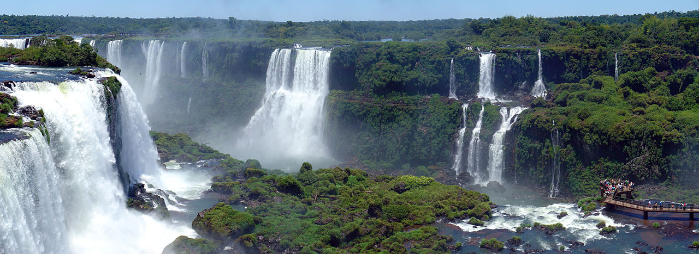
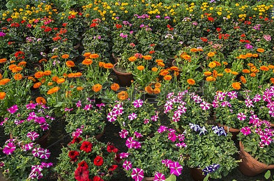

The Nature
The word nature is derived from the Latin word natura, or "essential qualities, innate disposition", and in ancient times, literally meant "birth". In ancient philosophy, natura is mostly used as the Latin translation of the Greek word physis (φύσις), which originally related to the intrinsic characteristics that plants, animals, and other features of the world develop of their own accord. The concept of nature as a whole, the physical universe, is one of several expansions of the original notion; it began with certain core applications of the word φύσις by pre-Socratic philosophers (though this word had a dynamic dimension then, especially for Heraclitus), and has steadily gained currency ever since.
This website aims to show you there most important pieces of the nature; animals, plants and the landscape.
Animals
Animals (also called Metazoa) are multicellular eukaryotic organisms that form the biological kingdom Animalia. With few exceptions, animals consume organic material, breathe oxygen, are able to move, can reproduce sexually, and grow from a hollow sphere of cells, the blastula, during embryonic development. Over 1.5 million living animal species have been described—of which around 1 million are insects—but it has been estimated there are over 7 million animal species in total. Animals range in length from 8.5 micrometres (0.00033 in) to 33.6 metres (110 ft). They have complex interactions with each other and their environments, forming intricate food webs. The kingdom Animalia includes humans but in colloquial use the term animal often refers only to non-human animals. The scientific study of animals is known as zoology.

go top
Plants
Animals (also called Metazoa) are multicellular eukaryotic organisms that form the biological kingdom Animalia. With few exceptions, animals consume organic material, breathe oxygen, are able to move, can reproduce sexually, and grow from a hollow sphere of cells, the blastula, during embryonic development. Over 1.5 million living animal species have been described—of which around 1 million are insects—but it has been estimated there are over 7 million animal species in total. Animals range in length from 8.5 micrometres (0.00033 in) to 33.6 metres (110 ft). They have complex interactions with each other and their environments, forming intricate food webs. The kingdom Animalia includes humans but in colloquial use the term animal often refers only to non-human animals. The scientific study of animals is known as zoology.
go top
Landscapes
A landscape is the visible features of an area of land, its landforms, and how they integrate with natural or man-made features.[1] A landscape includes the physical elements of geophysically defined landforms such as (ice-capped) mountains, hills, water bodies such as rivers, lakes, ponds and the sea, living elements of land cover including indigenous vegetation, human elements including different forms of land use, buildings, and structures, and transitory elements such as lighting and weather conditions. Combining both their physical origins and the cultural overlay of human presence, often created over millennia, landscapes reflect a living synthesis of people and place that is vital to local and national identity.

go top